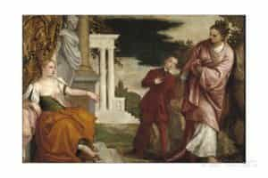
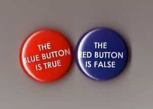
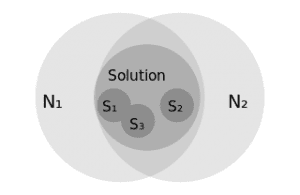

< < < Back
The Relationships Between Skepticism, Dogmatism, And Certitude – Return Of Kings
Greetings to all in this, the fourth week of Paschaltide; surrexit Dominus vere!
In the past two weeks, working with an eye to Cardinal Mercier’s Manual of Scholastic Philosophy, we looked at some preliminaries to the science of certitude, with special emphasis on defining truth (“an adequation of a thing and of the understanding”) and some of the terms involved, marking the distinction between objective and subjective truth (and how both deal properly with real truth), and clearing up common logical errors when it comes to questioning the nature of our perceptions.
We discovered that, ultimately, the problem of certitude resolves into two questions—the first, regarding the objectivity of the ideal order (i.e., whether the mental perception and synthesis of the elements in a true judgment has an objective element based in a real relation, or is itself the product of the thinking subject), and the second, regarding the objective reality of our concepts (i.e., do they correspond to objectively real things, or are they abstracted and particular to ourselves).
This may seem very abstruse and stringent, but the fact is that one must prepared to make such inquiries if he really wants to understand things, rather than having mere opinions about things. I’m afraid not much can be done to mitigate that! And, as I say, when I beheld the Christian saints and philosophers making these demands of themselves, I first began to see that their relationship to truth and certainty was not one of fear or hesitation.
In that same spirit, the good cardinal mentions that there is another question to resolve before we can address these two questions. Namely: what can we say about the initial state of mind, in our discussion of certitude? That is: can we assume that the mind must doubt everything? Or must we assume that the mind knows some truths, as we proceed to examine others?

Vice, Ease and Opinion – Haven’t We Had Enough?
Two Opposed Errors
He mentions that there are two errors, one to the right and the other to the left of the problem. One error is the error of radical doubt, which he calls the theory of universal doubt. The other is an exaggerated dogmatism. He prefers a middle path, which he names the path of rational dogmatism.
As to the excessively skeptical view, he points out that it departs from a merely methodological skepticism, by which one uses doubt in order to attain a greater certainty of the truth. Rather, this form of exaggerated skepticism winds up abandoning skepticism in order to make unproven assertions on the matter. This theory of universal doubt regards every act of human reason as inherently doubtful, thereby doubting its own capability of arriving at any certain knowledge of truth, and mistrusting any apparent path of escape from the predicament. I think many modern folk have more or less absorbed this view from the modern culture. There are two main arguments used in favour of this view.
1. The Argument from the Fact of Self-Deception. We often deceive ourselves, and we know this about ourselves, so a prudent man will assume that people who allow themselves to be deceived, and sometimes come to see this fact, are likely to deceive themselves on many occasions when this is not so clear.
2. The Argument from “The Vicious Circle.” Before we can verify a proposition as a certain one, we examine and judge it by some other criterion; otherwise we risk admitting it on unproven, a priori grounds. Yet before we can be certain of this criterion, we must verify it in a similar way, and so on ad infinitum. In this way we keep going back forever, or at least until we arrive at something for which we can discover no adequate, prior criterion, and even then we end in failure to arrive at certainty.
These Errors Analyzed
In the first place, we can respond that it is supremely absurd to be certain of universal uncertainty. The second argument, for example, is advanced as an airtight proof of the impossibility of certainty; this should be a clue that something is amiss! Indeed, since the very question is the possibility of certainty, a true skeptic does not begin by “proving” that nothing can be proven! No, we require suspension of judgment until a more correct examination can be made. The arguments are actually fairly easily answered. That a man deceives himself sometimes, and that it is therefore prudent to be wary against self-deceit, is not at all a proof that every single act of human reason is doubtful.
Indeed, how do we “know” that we deceive ourselves, unless we have some criterion for discerning between the true and the false; how do we recognize that we have sometimes embraced the latter over the former? To assert the fact of self-deception is already to have sinned against the dogma of uncertainty.

I’m Certain that we cannot be Certain…
As to the second argument, it errs in assuming that every proposition is justified by means of a prior and distinct criterion. Some true judgments contain in themselves the grounds of their justification, as we will see. And again, in short, since the question is whether the mind can know truth, we do ourselves no favors by making the assumption in one direction or the other without a certain grounds for demonstrating the opinion.
Those who err in the direction of an exaggerated dogmatism err by doing this, as well. Some philosophers have tried to move forward on the assumption that there are a few primary truths which we must assume if we are to hold that the mind can know certitude. These truths are:
1. The thinking subject truly exists
2. The principle of contradiction
3. The mind has thoughts that correspond really to reality
They assert that these truths are primary and must be assumed, because one has to accept them even to argue against them. This is true, insofar as it goes; these truths are necessary truths in the ontological order, by which one means to say that if these truths are not true, then it is impossible for the mind to know certainty. And so, yes, to attempt to argue against them, is to imply that one agrees with them (and that one is an idiot, or a nihilist who delights in the irony of it all).
Yet, this is still not a proof that this the mind can no truth; it is just to affirm that, if the mind can know the truth with certainty, it is because these principles are true. In exactly the same way, there is no basis for a conception of authentic morality (i.e., values that transcend mere considerations of pleasure or utility to rise to an actual level of “good” or “evil”) unless God exists and is Himself the source of the Good – yet, this does not prove the existence of God, or of morals; it simply acknowledges the necessity of the correlation between the two. So, while the exaggerated dogmatist has indeed hit upon necessary principles of certitude, he has simply acknowledged this correlation and has not yet proved that it does, in fact, exist.

Necessary, but not Necessary and Sufficient
A Better Way
Neither error has the right to lay down its view as a proven principle, therefore. The good Cardinal proffers instead what he calls Mitigated or Rational Dogmatism, which “deliberately abstains from making a judgment, holding that at the beginning of the study of the problem of certitude it is impossible either to affirm or to deny our mental capability of knowing truth.” He says that we may “be able legitimately to infer that our mind is capable of attaining true knowledge” ONLY if by some dint of our reflection, we can discover a grounds for concluding that our mental acts are conformable to reality.
Ne notes that our approach to this question will hinge upon whether things are mediately or immediately evident – that is, whether certain things proffer some direct proof, contained in themselves, of their truthfulness, or whether they can only be seen as true through various proofs and criteria which “mediate” (i.e., “stand between”) the thing and our ability to form a judgment of it. He acknowledges that “when the mind examines the propositions by which it expresses its knowledge, it finds a great number of them in which it does not see the identity or the non-identity between the predicate and subject” (i.e., of its judgment of truth).
This doubt is real and not merely methodical, and he acknowledges that the real acknowledgment of doubt about mediate propositions is not new, but is fully admitted in St. Thomas and in Aristotle. But the error of the Theory of Universal Doubt did hit upon a true insight; if all propositions were mediate propositions, we would have to go back ad infinitum citing proofs of each view. And this is itself is nearly self-evident—i.e., it comes close to being a truly immediate proposition, and as the Cardinal says: “immediate propositions, although indemonstrable [by means of a prior criterion] are by no means doubtful: their very self-evidence makes them indemonstrable – that is to say, incapable of being referred to propositions which are more evident” (since they are already entirely self-evident; they are indemonstrable not because they are not true, but because they are not demonstrated by something else). When these are reflected upon by the mind, they force their truthfulness upon the mind.
The Cardinal therefore says that we only assert two facts at the beginning of our discussion on certitude. 1) There are necessarily spontaneous assents (i.e., things that “seem true” to the mind at first glance) and 2) the power to examine these by reflection (without yet affirming too many things about the quality of this reflection). I will point out that he is here talking about the things we are required to admit if we want even to discuss the question. For, as he points out, “to suppress id de quo queritur is necessarily to suppress id quod quaeritur” (“to suppress any mention of that of which we are inquiring, is to suppress discovering the thing itself”).
He acknowledges that “there is, however, all the difference in the world between taking these data for granted, and the a priori assertion that we are sure to find skepticism wrong, or that the result of our investigation must be the dogmatic thesis that the mind is capable of knowing truth.” He has given the data we must necessary admit in order even to ask questions about the topic, avoiding on the one hand an error that contradicts itself and buries the question under an absurd certainty of incertainty on the one hand, or a dogmatic assertion that we must assume certain truths which, though necessary for certitude to exist, have, along with certitude itself, not yet been proven.
I know I’m proceeding fairly deliberately, here. Festina lente is my motto for this series – to cover a lot of important ground more quickly than would be normal, but not to omit necessary steps in the rush.
Read More: Can We Attain Certitude Through Our Perceptions?